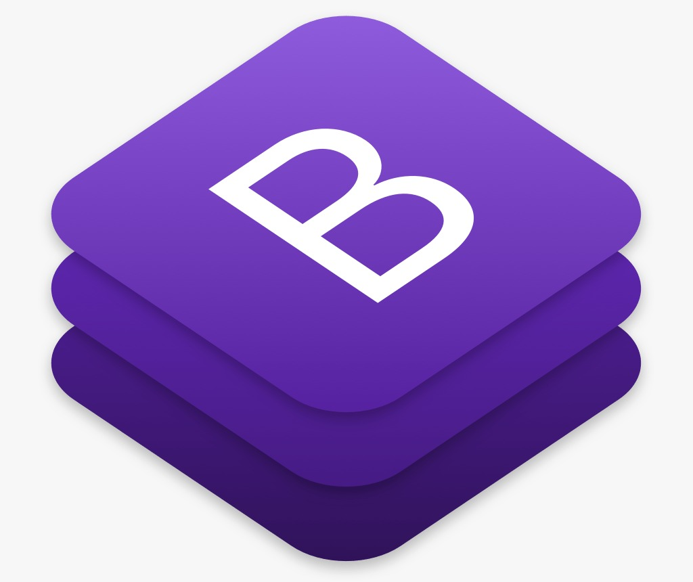

Bootstrap. Trata-se de um framework front-end que
veio para facilitar e agilizar o trabalho, oferecendo
padrões para HTML, JavaScript e CSS.
Na prática, a principal aplicação do Bootstrap
seria na criação de sites responsivos (mobile).
Com o Bootstrap, o profissional já não tem mais
que perder tanto tempo digitando toda uma linha de CSS
novamente. Esta facilidade se deve ao fato de que ele possui
vários plugins em JavaScript (jQuery) que tornam o seu dia-a-dia
muito mais fácil. Com inúmeras bibliotecas prontas disponíveis,
o trabalho que o desenvolvedor tem é de, praticamente, só as incluir
em seus projetos.
A ferramenta ajuda o profissional a implementar recursos
como o menu dropdown, carousel, modal, slideshow,
etc., que são aplicados com muito mais facilidade.
De acordo com o site oficial, o Bootstrap “usa CSS tradicional,
mas seu código fonte utiliza os dois pré-processadores CSS mais
populares, Less e Sass”.
